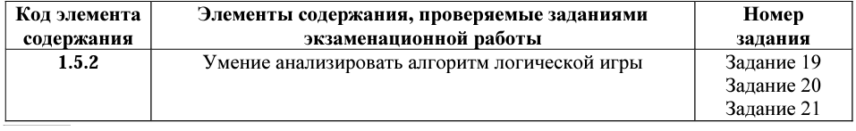
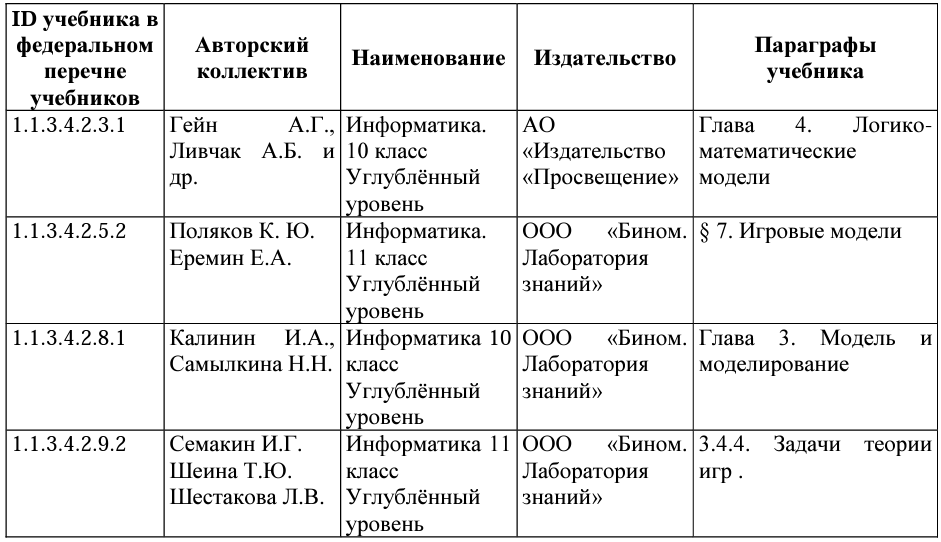

Теория игр. Игровые стратегии
Какие позиции кодификатора элементов содержания проверяет:
Что нужно знать/уметь по теме:
ЗНАТЬ:
Основные понятия: игрок, ход игрока, партия, стратегия игры, выигрышная стратегия, дерево игры.
УМЕТЬ:
использовать знания о графах, деревьях и списках при описании реальных объектов и процессов; разрабатывать и использовать компьютерно-математические модели; оценивать числовые параметры моделируемых объектов и процессов; интерпретировать результаты, получаемые в ходе моделирования реальных процессов; анализировать готовые модели на предмет соответствия реальному объекту или процессу; строить дерево игры по заданному алгоритму; строить и обосновывать выигрышную стратегию игры.
Где взять информацию по теме
Учебники федерального перечня Минпросвещения России
Какие задания открытого банка выполнить для тренировки:
Задание №19-21
Вариант №1 Вариант №2 Вариант №3 Вариант №4 Вариант №5 Вариант №6 Вариант №7 Вариант №8 Вариант №9 Вариант №10 Вариант №11 Вариант №12 Вариант №13 Вариант №14 Вариант №15 Вариант №16 Вариант №17 Вариант №18 Вариант №19 Вариант №20 Вариант №21 Вариант №22